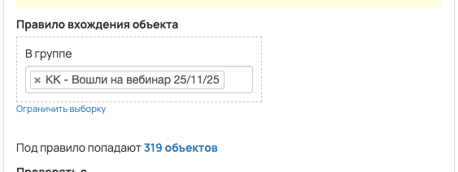
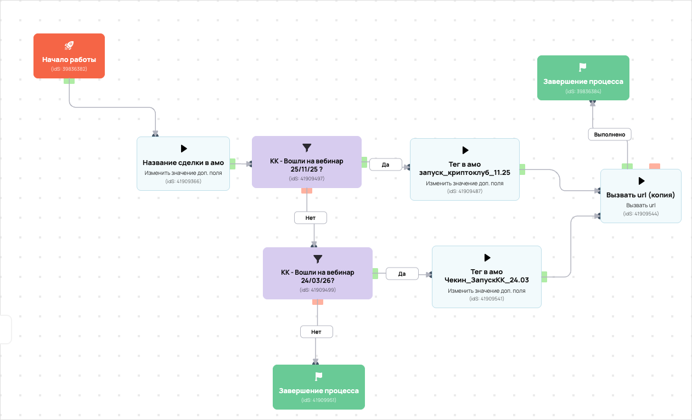

[AMO] [ED] КриптоКлуб чекины 90557
- ID процесса:
2298072 - Объект: Пользователи
- Статус: Ожидание событий
- Внутренняя страница: 2298072. [AMO] [ED] КриптоКлуб чекины 90557
- GetCourse: Карточка | Схема процесса
Скриншоты процесса


Коротко для заказчика
- Главное: В процесс попадают пользователи по правилу: В группе (ID: 4560613).
- Дальше он передает данные как: Формы и анкеты.
- Связанных баз Vakas: 1.
Понятное описание процесса
- Процесс работает с объектом GetCourse: Пользователи. Текущий статус процесса: Ожидание событий.
- На вход попадают данные так: В процесс попадают пользователи по правилу: В группе (ID: 4560613).
- Внутри схемы есть дополнительные проверки/ожидания: 2. Основные блоки: «КК - Вошли на вебинар 25/11/25 ?»; «КК - Вошли на вебинар 24/03/26?».
- Дальше процесс делает прямые вызовы Vakas: 1. Напрямую задействованы базы: 90557.
- Передача: 90557. База 90557: Формы и анкеты. Передаются параметры:
name,email,phone,getcourse_user_id,utm_source,utm_medium,utm_campaign,utm_content,utm_term,tag_deal_1и другие. - Что происходит в amoCRM: На входе в этап КРИПТОКЛУБ -> Пришел на веб [77815634] база ищет дубль и при необходимости переводит найденную сделку в рабочий этап.
Ход процесса в GetCourse
- Схема состоит из 11 блоков и 14 переходов.
- По типам: стартов 1, условий/ожиданий 2, вызовов URL 3, изменений полей 3, финалов 2.
Блоки процесса: что делают и зачем нужны:
- Блок
39836382«Начало работы» (старт). Что делает: Запускает выполнение схемы для объекта, который попал под правило входа процесса. Зачем нужен: Нужен как точка входа: от него GetCourse начинает движение объекта по схеме. Дальше: если результат «Выполнено», идет в «Название сделки в амо». - Блок
41909366«Название сделки в амо» (изменение поля). Что делает: меняет полеorder_name_amo(Установить равным). значение: чекин Зачем нужен: Нужен, чтобы записать внутри GetCourse технический признак/значение, которое потом используется в передаче или логике ветвления. Дальше: если результат «Выполнено», идет в «КК - Вошли на вебинар 25/11/25 ?». - Блок
41909497«КК - Вошли на вебинар 25/11/25 ?» (условие). Что делает: Проверяет условие: В группе (ID: 4560613). Зачем нужен: Нужен, чтобы разделить поток: подходящих пользователей/заказы отправить дальше, неподходящих перевести на другую ветку или завершить. Дальше: если результат «Нет», идет в «КК - Вошли на вебинар 24/03/26?»; если результат «Да», идет в «Тег в амо запуск_криптоклуб_11.25». - Блок
41909487«Тег в амо запуск_криптоклуб_11.25» (изменение поля). Что делает: меняет полеdeal_tag_1(Установить равным). значение: запуск_криптоклуб_11.25 Зачем нужен: Нужен, чтобы записать внутри GetCourse технический признак/значение, которое потом используется в передаче или логике ветвления. Дальше: если результат «Выполнено», идет в «Вызвать url (копия)». - Блок
41909544«Вызвать url (копия)» (вызов URL). Что делает: Передает в Vakas: 90557. База 90557, канал «Формы и анкеты» (POST); параметры:name,email,phone,getcourse_user_id,utm_source,utm_medium,utm_campaign,utm_content,utm_term,tag_deal_1,order_name_amo; timeout 300 сек. Зачем нужен: Нужен, чтобы передать подходящий объект в 90557. База 90557; дальше На входе в этап КРИПТОКЛУБ -> Пришел на веб [77815634] база ищет дубль и при необходимости переводит найденную сделку в рабочий этап. Дальше: если результат «Ошибка», идет в «n8n fail после Вызвать url (копия) #41909544»; если результат «Выполнено», идет в «n8n success после Вызвать url (копия) #41909544». - Блок
43527870«n8n success после Вызвать url (копия) #41909544» (вызов URL). Что делает: Пишет событие в n8n: success, action vakas_users (POST); параметры:event,clientED,gcDomain,action,process_id,process_name,entity_type,object_id,user_id,name,email,phone,error_message; timeout 10 сек. Зачем нужен: Нужен для фиксации успешной отправки: n8n получает событие, что Vakas-вызов отработал без ошибки. Дальше: если результат «Ошибка», идет в «Завершение процесса»; если результат «Выполнено», идет в «Завершение процесса». - Блок
39836384«Завершение процесса» (завершение). Что делает: Завершает ветку процесса после выполненных проверок и действий. Зачем нужен: Нужен, чтобы закрыть текущую ветку и не гонять объект по процессу повторно. Дальше переходов нет: это конечная точка ветки. - Блок
43527879«n8n fail после Вызвать url (копия) #41909544» (вызов URL). Что делает: Пишет событие в n8n: fail, action vakas_users (POST); параметры:event,clientED,gcDomain,action,process_id,process_name,entity_type,object_id,user_id,name,email,phone,error_message; timeout 10 сек. Зачем нужен: Нужен для контроля ошибки: n8n получает данные неуспешной отправки, чтобы можно было увидеть проблему и повторить/разобрать передачу. Дальше: если результат «Ошибка», идет в «КК - Вошли на вебинар 25/11/25 ?»; если результат «Выполнено», идет в «КК - Вошли на вебинар 25/11/25 ?». - Блок
41909499«КК - Вошли на вебинар 24/03/26?» (условие). Что делает: Проверяет условие: В группе (ID: 4724538). Зачем нужен: Нужен, чтобы разделить поток: подходящих пользователей/заказы отправить дальше, неподходящих перевести на другую ветку или завершить. Дальше: если результат «Нет», идет в «Завершение процесса»; если результат «Да», идет в «Тег в амо Чекин_ЗапускКК_24.03». - Блок
41909541«Тег в амо Чекин_ЗапускКК_24.03» (изменение поля). Что делает: меняет полеdeal_tag_1(Установить равным). значение: Чекин_ЗапускКК_24.03 Зачем нужен: Нужен, чтобы записать внутри GetCourse технический признак/значение, которое потом используется в передаче или логике ветвления. Дальше: если результат «Выполнено», идет в «Вызвать url (копия)». - Блок
41909951«Завершение процесса» (завершение). Что делает: Завершает ветку процесса после выполненных проверок и действий. Зачем нужен: Нужен, чтобы закрыть текущую ветку и не гонять объект по процессу повторно. Дальше переходов нет: это конечная точка ветки.
Что именно входит в процесс
- В процесс попадают пользователи по правилу: В группе (ID: 4560613).
Как именно настроено правило
- В amoCRM процесс ориентирован на воронки: «КриптоКлуб».
- В описании зафиксированы этапы обработки: «Пришел на веб».
Куда и как передается дальше
| База Vakas | Что передается | Этап в amoCRM | Что происходит со сделкой |
|---|---|---|---|
| 90557. База 90557 | Формы и анкеты | КРИПТОКЛУБ -> Пришел на веб [77815634] | На входе в этап КРИПТОКЛУБ -> Пришел на веб [77815634] база ищет дубль и при необходимости переводит найденную сделку в рабочий этап. |